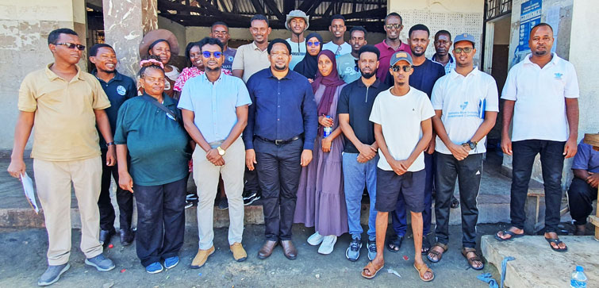
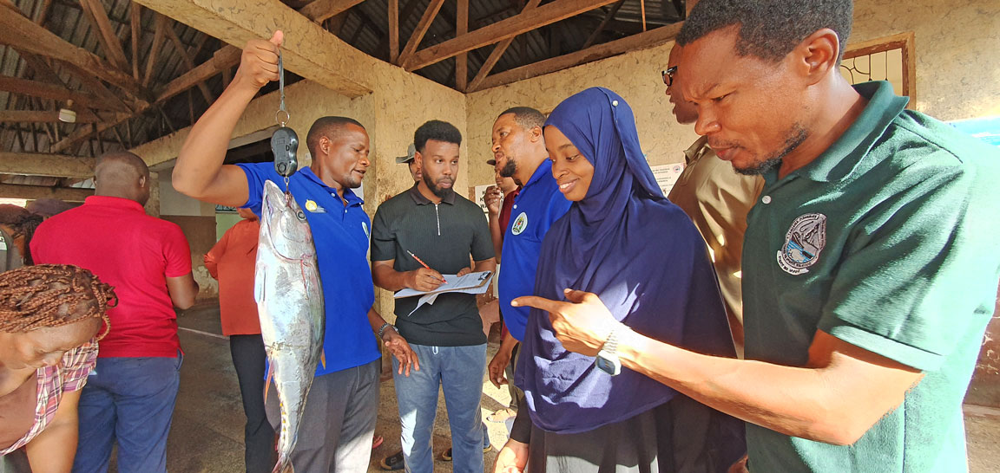

graph TD
A["<b>FISH POPULATION</b><br/>Fish in the Ocean"]
B["<b>DATA COLLECTION</b><br/>Landing Sites & Fisheries"]
C["<b>BIOLOGICAL PARAMETERS</b><br/>Growth | Mortality | Recruitment | Maturity"]
D["<b>POPULATION MODELS</b><br/>Age-Structured | Length-Based | Surplus Production"]
E["<b>STOCK STATUS</b><br/>Healthy | At Risk | Overfished"]
F["<b>MANAGEMENT ADVICE</b><br/>Catch Limits | Regulations | Conservation"]
A -->|Fishing| B
B -->|Length, Weight,<br/>Maturity Data| C
C -->|Parameter<br/>Estimates| D
D -->|Analysis &<br/>Modeling| E
E -->|Assessment<br/>Results| F
F -->|Policy &<br/>Implementation| A
style A fill:#e1f5fe
style B fill:#fff3e0
style C fill:#f3e5f5
style D fill:#e8f5e9
style E fill:#fce4ec
style F fill:#fff9c4
Field Training at Kunduchi Landing Site: From Theory to Practice
training
field work
practical skills
stock assessment
Participants apply classroom learning at Kunduchi Landing Site, mastering fish measurement, dissection, and maturity assessment techniques essential for stock assessment.
Bridging Theory and Practice
After several days of theory and computation in the classroom, the training moved to the field—where the real work of stock assessment happens. Participants traveled to Kunduchi Landing Site to apply their newly acquired knowledge to actual fish samples and observe data collection practices in real-world fisheries settings.
The landing site visit represents a critical transition: moving from abstract concepts about population dynamics and growth parameters to the tangible work of collecting, measuring, and analyzing actual fish from the catch.

From Data to Assessment
The morning’s field work directly connected to afternoon analysis sessions. Participants took the fish they measured and dissected, entered the data into R, and immediately saw:
- How their measurements translated into length-frequency distributions
- Whether they had correctly identified mature vs. immature fish
- How data quality affected downstream analysis
- Why consistent, careful measurement matters
This immediate feedback loop—collect data → analyze → see results → improve methods—is powerful pedagogy. When you see that your 1 cm measurement error shifts an L50 estimate by 2 cm, you never forget the importance of accuracy.
Lessons from the Field
Several critical insights emerged from the Kunduchi experience:
1. Data Quality is Non-Negotiable
The most sophisticated models cannot overcome poor-quality input data. Participants witnessed firsthand how: - Measurement errors propagate through analyses - Inconsistent classification undermines maturity ogives - Missing data creates gaps in stock assessments - Investment in field training pays dividends in analysis reliability
2. Context Shapes Assessment
Landing sites aren’t uniform. At Kunduchi, participants observed: - Species composition varies by season and fishing effort - Vessel types target different size classes - Market demand influences which fish are landed - Social and economic factors affect data availability
This variability means stock assessments must be tailored to local conditions—generic approaches often fail.
3. Fishers Are Expert Observers
Conversations with fishers, traders, and fish handlers revealed invaluable knowledge:
- “The big yellowfin have moved south this year”
- “We used to catch more juveniles; now we’re seeing mostly adults”
- “Effort has increased while catches haven’t grown”
- “Certain gears catch different sizes”
Traditional ecological knowledge complements scientific assessment. The best management incorporates both.

4. Practical Constraints Are Real
Ideal stock assessments assume:
- Regular, systematic sampling
- High-quality equipment
- Dedicated staff
- Consistent protocols
At Kunduchi, participants learned to work within real constraints:
- Limited budgets for equipment and personnel
- Seasonal variation in landing site activity
- Competition for fisher time and attention
- Transport and storage challenges
Solutions must be practical, affordable, and sustainable in local contexts.

Building Local Capacity
Sustainable Assessment Systems
The training is not about creating dependence on visiting experts. It’s about building local capacity for:
- Data collection: Train-the-trainer programs where participants become data coordinators at their own landing sites
- Analysis: Participants can now run their own assessments using R and the methods taught
- Interpretation: Understanding what results mean for their fisheries and communicating with managers
- Adaptation: Modifying methods to local conditions and continuously improving systems

Next Steps for Participants
When they return home, participants will:
- Establish sampling programs at key landing sites in Somalia
- Train local data collectors in fish measurement and recording procedures
- Collect baseline data on species, sizes, and population structure
- Conduct stock assessments using the methods learned in this training
- Communicate results to fisheries managers and stakeholders
- Support management decisions with scientific evidence
Conclusion: Science Meets the Real World
The Kunduchi landing site visit exemplifies what makes this training distinctive. Participants didn’t just learn stock assessment in abstract—they got their hands wet, literally and figuratively, working with real fish, real data challenges, and real fisheries.
This experience bridges a critical gap in fisheries science education: the gap between what happens in textbooks and what happens in fisheries. When participants return to their landing sites and set up their own sampling programs, they’ll do so with:
- Practical knowledge: They know how long measurements actually take, what equipment works, where problems arise
- Realistic expectations: They understand constraints and can design feasible systems
- Confidence: They’ve done it successfully once; they can do it again
- Ownership: This isn’t an imposed external system; it’s their work, their data, their science
Looking Ahead
The field training at Kunduchi is not the end of the program—it’s the beginning of the real work. Over the coming months, participants will implement what they learned, collect data from their own fisheries, and conduct assessments that will inform management decisions.
The impact of this training will be measured not in certificate holders, but in: - Fisheries stocks assessed with scientific rigor - Management decisions informed by evidence - Fishing communities protected by sustainable practices - Fisheries that remain productive for future generations
That work starts at landing sites like Kunduchi, where dedicated professionals measure fish and collect data one fish at a time, knowing that their careful work builds the foundation for sound fisheries science.
Special thanks to:
- The fishing community and traders at Kunduchi Landing Site for their hospitality and collaboration
- TAFIRI staff who provided equipment, logistics, and expertise
- Somali fisheries professionals who brought commitment and enthusiasm to the field work
- All participants who demonstrated remarkable patience and attention to detail in learning these critical skills